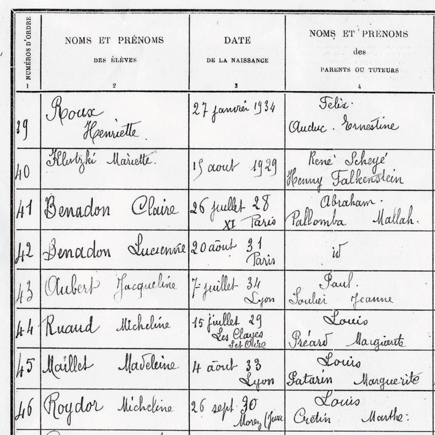

Portrait d’archive
Enfants Benadon
Claire BENADON (S)
Claire BENADON est née le 26/07/1928 à Paris en France.
Rassemblée à Lyon, elle est déportée à Auschwitz le 30/05/1944 par le convoi n°75. Survivante.
Fille d'Abraham. Déportée avec son frère Jean-Claude.
Dernière adresse connue : 7, rue Balthazar (Lyon)
École fréquentée : Ecole Jules Verne (Lyon)
Nom : BENADON
Prénom(s) : Claire
Date naissance : 26/07/1928
Âge (ans) : 15
Lieu naissance : Paris
Pays ou département : Seine
Lieu rassemblement : Lyon
Dernière adresse : 7, rue Balthazar
Ville : Lyon
Code postal : 69003
N° Convoi : 75
Date déportation : 30/05/1944
Informations diverses : Fille d’Albert (Abraham) Benadon et de Paulette (Pallomba) Benadon née Mallah. Claire Benadon habitait à Paris au 129 Bd. Voltaire et écolière en maternelle à l’école de la Roquette à Paris (144 rue de la Roquette, 75011). Palomba est naturalisée le 09/06/1938 par décret. Retrait de nationalité par le Décret du 28/03/1942, publié au Journal officiel du 4 avril 1942. Claire est naturalisée française le 21/07/1936 par déclaration (Dossier 56035 X 36). Elle est déchue de la nationalité par le Décret du 28 mars 1942, publié au Journal officiel du 4 avril 1942.
Réfugiée à Lyon elle était à l’École Jules Verne à Lyon avec sa sœur Lucienne dite Lucette (non déportée née le 20/08/1931 à Paris, décédée le 25/04/2002 à Lyon). Arrêtée au 32, route de Genas où elle sont cachées : Madame Paulette Benadon (née le 13 juin 1904 à Salonique), ses deux filles (Claire née le 26 juillet 1928 et Liliane Benadon née le 2 avril 1922) et son fils Claude (né le 27 décembre 1943 à Lyon) (Source: S. Altar & R. Le Mer, Spectre de la terreur, Ed. Tiresias).
Paulette et ses deux filles sont internées à la prison Montluc. Jean-Claude, âgé de 5 mois, est interné seul à l’hôpital de l’Antiquaille. La famille est transférée à Drancy le 20/05/1944 et déportée le 30/05/1944 à Auschwitz par le convoi 75.
Claire est transférée au Camp de Terezin (Theresienstadt) ainsi que sa sœur Liliane (Source: Alrosen). Claire est survivante en 1945 et témoignera sur le sort de sa famille le 12/01/1953. Leur père Albert Abraham Benadon (13/05/1901 à Salonique, Grèce; décédé le 23/05/1977 à Lyon) lancera un appel à recherche dans la presse pour retrouver sa femme et ses enfants. Claire est décédée en 1988 à Hauteville-Lompnes (01110) dans l’Ain.
Benadon (Jean, Claude), né le 27 décembre 1943 à Lyon (Rhône), décédé le 4 juin 1944 à Auschwitz (Pologne). Benadon, née Mallah (Palomba dit Paulette), le 13 juin 1904 à Salonique (Grèce), décédée le 4 juin 1944 à Auschwitz (Pologne). JO
Lieu de déportation : Auschwitz
Lieu de départ : Drancy
Nombre total de déporté·e·s du convoi : 1000
Gazé·e·s à l'arrivée : 627 (62,7 %)
Survivant·e·s en 1945 : 99 (9,9 %)
Jean Claude BENADON
Jean Claude BENADON est né le 27/12/1943 à Paris ou à Lyon en France.
Rassemblé à Lyon, il est déporté à Auschwitz le 30/05/1944 par le convoi n°75. Il est mort en déportation.
Fille d'Abraham. Déportée avec sa sœur Claire.
Dernière adresse connue : 7, rue balthazar (Lyon)
Nom : BENADON
Prénom(s) : Jean, Claude
Date naissance : 27/12/1943
Âge (ans) : 5 mois
Lieu naissance : Lyon
Pays ou département : Seine
Lieu rassemblement : Lyon
Dernière adresse : 7, rue Balthazar
Ville : Lyon
Code postal : 69
N° Convoi : 75
Date déportation : 30/05/1944
Informations diverses : Fils d’Albert (Abraham) Benadon et de Paulette (Pallomba) Benadon née Mallah. Ils ont enfants: Liliane Rachel (02/04/1922, Paris 11), Joseph (12/03/1926, Paris 11), Claire Marie (26/07/1928, Paris), Lucienne Lucette (20/08/1931, Paris) et Jean Claude (27/12/1943, Lyon).
Réfugiés à Lyon, ils sont arrêtés par la Gestapo et la Milice le 13/05/1944 au 32, route de Genas où ils sont cachées : Madame Paulette Benadon (née le 13 juin 1904 à Salonique), ses deux filles (Claire née le 26 juillet 1928 et Liliane Benadon née le 2 avril 1922) et son fils Claude (né le 27 décembre 1943 à Lyon). Le père caché dans un placard n’a pas été trouvé. Paulette et ses deux filles sont internées à la prison Montluc le 13/05/1944. Jean-Claude, âgé de 5 mois, est interné seul à l’hôpital de l’ Antiquaille du 13/05/44 au 19/05/1944 (Cahier de Madame Cahen des enfants internés à l’ Hôpital de l' Antiquaille, Lyon). La famille est transférée à Drancy le 20/05/1944 et déportée le 30/05/1944 à Auschwitz par le convoi 75. Claude et sa mère ne survivront pas.
Benadon (Jean, Claude), né le 27 décembre 1943 à Lyon (Rhône), décédé le 4 juin 1944 à Auschwitz (Pologne). JO
Benadon, née Mallah (Palomba dit Paulette), le 13 juin 1904 à Salonique (Grèce), décédée le 4 juin 1944 à Auschwitz (Pologne).
Lieu de déportation : Auschwitz
Lieu de départ : Drancy
Nombre total de déporté·e·s du convoi : 1000
Gazé·e·s à l'arrivée : 627 (62,7 %)
Survivant·e·s en 1945 : 99 (9,9 %)
Liliane Rachel BENADON (S)
Liliane BENADON est née le 02/04/1922 à Paris en France.
Rassemblée à Lyon, elle est déportée à Auschwitz le 30/05/1944 par le convoi n°75. Survivante.
Fille d'Abraham et de Paulette. Déportée avec son frère Jean-Claude.
Dernière adresse connue : 7, rue Balthazar (Lyon)
École fréquentée :
Nom : BENADON
Prénom(s) : Liliane Rachel
Date naissance : 02/04/1922
Âge (ans) : 21
Lieu naissance : Paris
Pays ou département : Seine
Lieu rassemblement : Lyon
Dernière adresse : 7, rue Balthazar
Ville : Lyon
Code postal : 69003
N° Convoi : 75
Date déportation : 30/05/1944
Informations diverses : Fille d’Albert (Abraham) Benadon et de Paulette (Pallomba) Benadon née Mallah. Sœur de Lucienne Benadon (non déportée née le 20/08/1931 à Paris). Liliane Benadon habitait à Paris au 129 Bd. Voltaire (75011). Réfugiée à Lyon. Elle était comptable. Elle est naturalisée le 29 mars 1926 par déclaration. Retrait de nationalité par le Décret du 28 mars 1942, publié au Journal officiel du 4 avril 1942.
La famille est arrêtée au 32, route de Genas où elle sont cachées : Madame Paulette Benadon (née le 13 juin 1904 à Salonique), ses deux filles (Claire née le 26 juillet 1928 et Liliane Benadon née le 2 avril 1922) et son fils Claude (né le 27 décembre 1943 à Lyon) (Source: S. Altar & R. Le Mer, Spectre de la terreur, Ed. Tiresias). Ils sont arrêtés sur dénonciation d’une dénommée Lejeune (Hôtel d’Anjou, 4 rue du Général Plessier à Lyon) qui recherchait leur frère Georges du maquis d’Yseron. Lejeune sera arrêtée à la Libération (Source: témoignage de Liliane et de Claire, le 22/05/1951, Division des Archives des Victimes des Conflits Contemporains, Caen).
Paulette et ses deux filles sont internées à la prison Montluc. Jean-Claude, âgé de 5 mois, est interné seul à l’hôpital de l’ Antiquaille. La famille est transférée à Drancy le 20/05/1944 et déportée le 30/05/1944 à Auschwitz par le convoi 75.
Liliane est transférée au Camp de Bergen en octobre 1944. En février 1945, elles sont transférées sur le camp de Leipzig puis à Terezin (Theresienstadt) ainsi que sa soeur Claire, d’où elle sont libérée le 01/05/1945 par les troupes russes. Elles sont rapatriées ensemble le 01/06/1945 au centre de Sathonay. Liliane, survivante en 1945 (carte de “déporté politique” n°211501732) et témoignera sur le sort de sa famille le 22/03/1951 à Lyon. Leur père Albert Abraham Benadon (13/05/1901 à Salonique, Grèce; décédé le 23/05/1977 à Lyon) lancera un appel à recherche dans la presse pour retrouver sa femme et ses enfants. Liliane est décédée le 23/01/2014 à Lyon.
Benadon (Jean, Claude), né le 27 décembre 1943 à Lyon (Rhône), décédé le 4 juin 1944 à Auschwitz (Pologne). Benadon, née Mallah (Palomba dit Paulette), le 13 juin 1904 à Salonique (Grèce), décédée le 4 juin 1944 à Auschwitz (Pologne).
Lieu de déportation : Auschwitz
Lieu de départ : Drancy
Nombre total de déporté·e·s du convoi : 1000
Gazé·e·s à l'arrivée : 627 (62,7 %)
Survivant·e·s en 1945 : 99 (9,9 %)